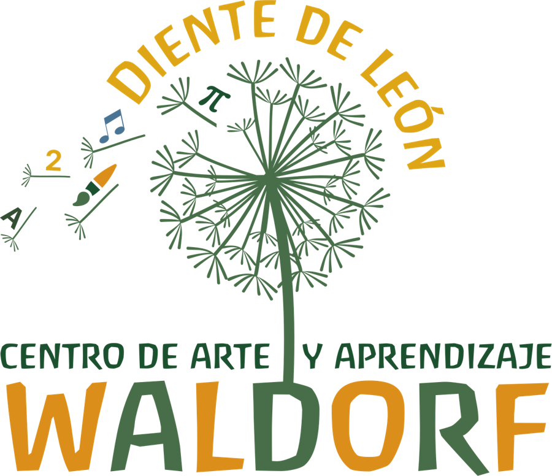

Diente de León nace de la profunda convicción de un equipo experimentado de maestras y familias en dar continuidad a los procesos formativos y de aprendizaje de las generaciones presentes y futuras, en un espacio seguro, auténtico y fundamentado en los principios de la pedagogía Waldorf.
Misión
Somos una comunidad de aprendizaje, arte y bienestar. Acompañamos la formación continua e integral de seres humanos libres, desde la mirada antroposófica de lo bueno, lo bello y lo verdadero.
Visión
Consolidarnos como una comunidad educativa que ofrezca en Costa Rica los beneficios de las distintas ramas de la antroposofía.

Nuestros valores
Lo bueno, lo bello y lo verdadero
La brújula de todo lo que hacemos.
Respeto al ritmo
Cada niño aprende en su tiempo.
Convivencia sana
Hábitos que nos ayudan a vivir juntos.
Comunidad
Escuela y hogar caminan en la misma dirección.
Amor por aprender
Curiosidad que dura toda la vida.
Cómo se rige la escuela
La escuela la administra la Asociación Diente de León Centro de Arte y Aprendizaje Waldorf, una asociación sin fines de lucro.
Se autogestiona con el trabajo conjunto de docentes, familias y comunidad. [Detalle de la junta directiva y la asamblea, por confirmar con la escuela].
Docentes
Guían la vida pedagógica
Familias
Participan y sostienen
Comunidad
Teje la red alrededor

Por qué un diente de león
Fíjate en las semillas que se lleva el viento: una letra, un número, una nota musical, el símbolo π y un pincel. Son el lenguaje, la matemática, la música y el arte que cada niño se lleva consigo.
Como el diente de león, la escuela siembra con cuidado y deja que cada semilla encuentre su lugar en el mundo.
Nuestras maestras
Un equipo con experiencia y formación en pedagogía Waldorf, que acompaña a cada grupo con atención y cariño.
Celebramos las estaciones
Las fiestas del año reúnen a niños, familias y maestras alrededor de la luz, la cosecha y la naturaleza. [Nombres de las fiestas que celebra la escuela].
Agenda una visita